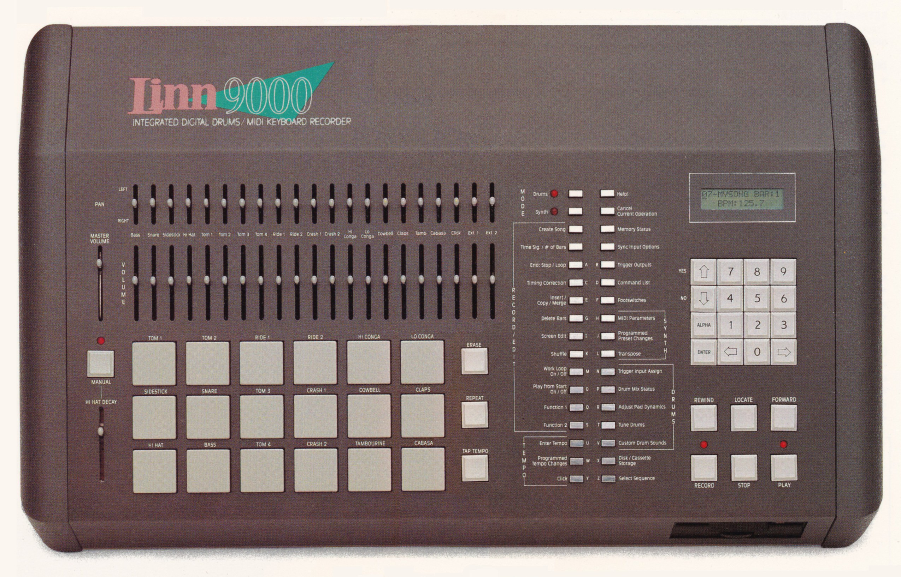
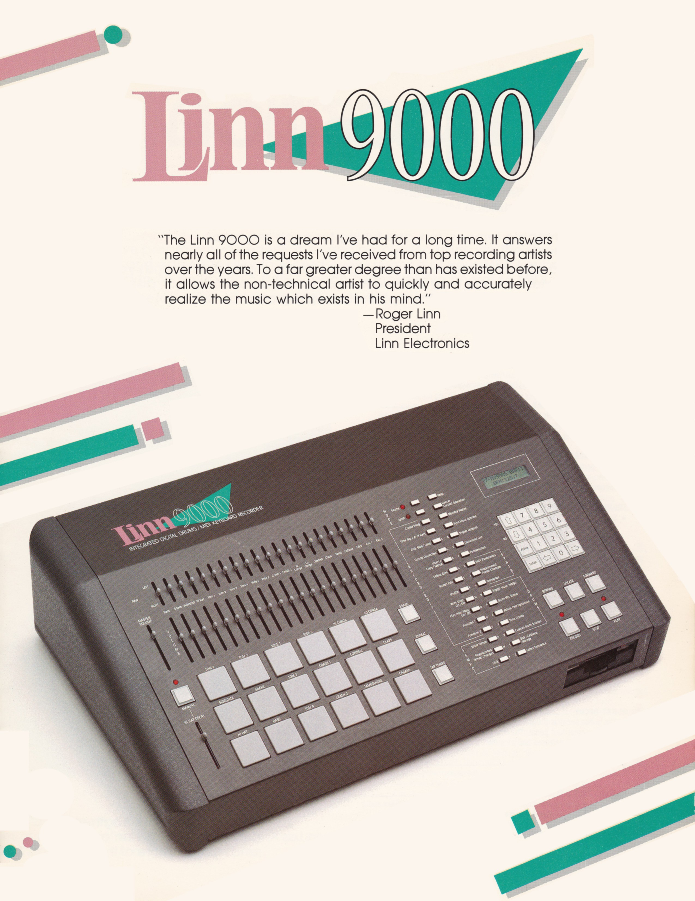

1984
Linn Electronics (Roger Linn)
Linn 9000
The pad-workstation that folded sampling, MIDI sequencing, and a mixer into a drum machine — and was undone by its own software

Overview
Deep dive
Media
